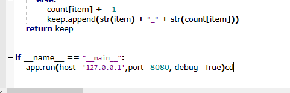
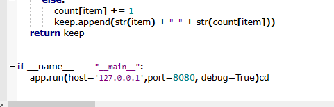

Heroku與Github倉儲同步
這次老師介紹Heroku來連結Github倉儲，並且同步，讓之後更方便。Heroku是第一次用的網站，遇到了有些問題並搞懂runtime等其他兩樣物件來讓Heroku跑動。



利用新版的 P37 18 11 中的 eric6 開發視窗程式 << Previous Next >> 說明如何利用 MikTeX 與 Pandoc, 以非同步協同編輯的流程建立各組的專案報告
這次老師介紹Heroku來連結Github倉儲，並且同步，讓之後更方便。Heroku是第一次用的網站，遇到了有些問題並搞懂runtime等其他兩樣物件來讓Heroku跑動。
